Lokaalin tietokoneen tiedot
GPU: Nvidia RTX 3070
CPU: AMD Ryzen 9 5900X 12-Core
RAM: 32GB
OS: Windows 11 23H2
Virtuaalipalvelimen tiedot
CPU: 1 Core
RAM: 1GB
OS: Debian 12
Harjoitus 5: Nimekäs
a) Nimi
Pitää hankkia julkinen domain nimi osoittamaan omaan virtuaalikoneeseen. En tarvitse domain nimeä omaan käyttöön joten lähden etsimään mahdollisimman halpaa palveluntarjoajaa. Namecheap valikoituu tarjoajaksi. Etsin aleksipartanen domainia ja etsin halvimman mahdollisen. Domain aleksipartanen.space maksaa vain 0.83 euroa vuodeksi, joten otan sen. Tarjolla on monia eri palveluja, joita voisi ottaa oston yhteyteen, mutta nyt ei ole tarvetta kuin vain domain nimelle.
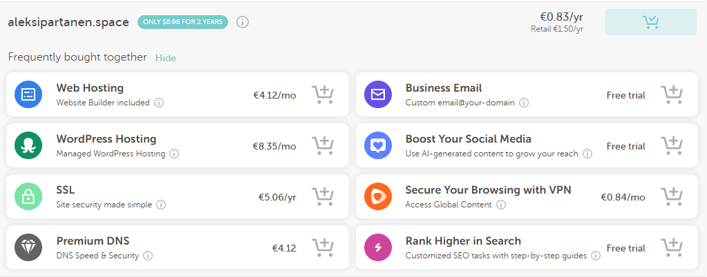Otetaan kassalla vielä domain privacy suojaus päälle ilmaiseksi.
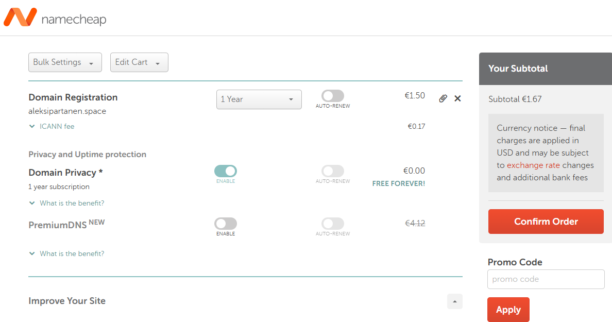Rekisteröidyin Namecheapin palveluun. Nimen ja osoitteen lisääämisen jälkeen pitää lisätä kortin tiedot. Loppuhinnaksi nimelle vuoden ajaksi tuli 1e
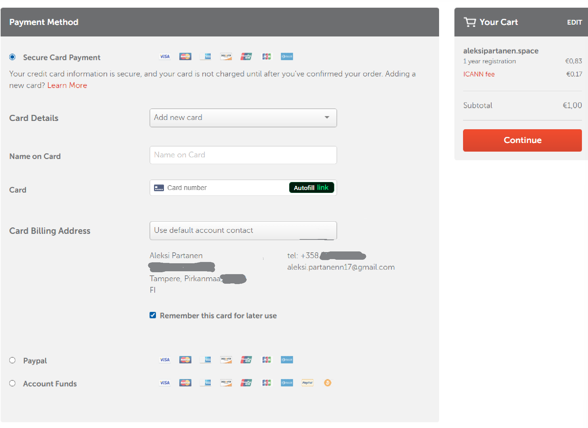Seuraavaksi laitetaankin osoite osoittamaan omaan koneeseen. Namecheapin Domain List näkymästä valitaan aleksipartanen.space ja Advanced DNS. HOST RECORDS osiossa nähdään että siinä on turha CNAME tietue. Poistan sen ja lisään oman A Record kohdan, joka osoittaa virtuaalipalvelimelle. Host kohtaan laitetaan www, joka tarkoittaa www.aleksipartanen.space osoitetta. @ host taas tarkoittaa pelkkää domain osoitetta, tässä tapauksessa aleksipartanen.space. TTL ajaksi laitan 5 minuuttia, jotta muutokset näkyvät nopeasti.
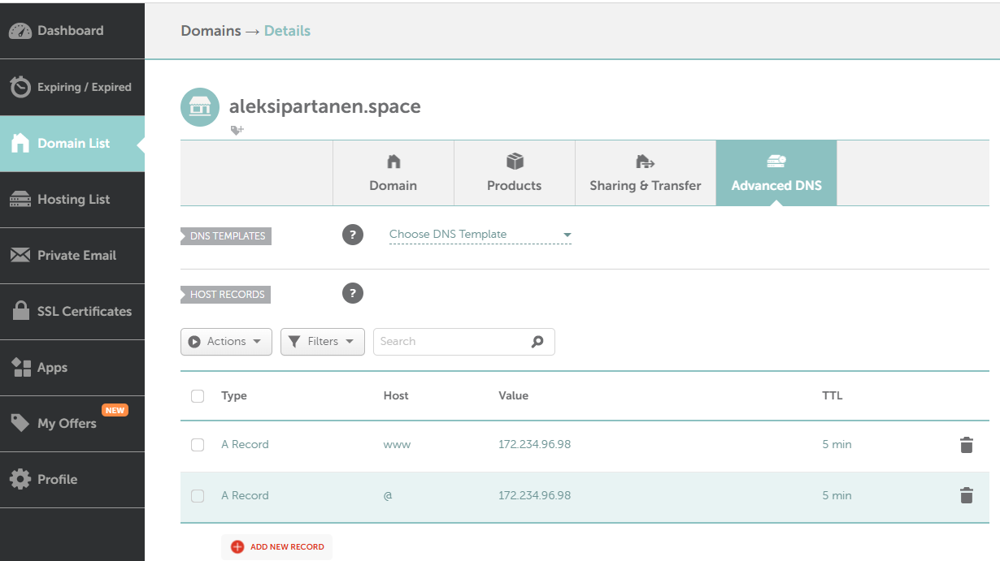Webbisivu näkyy nyt oikein.
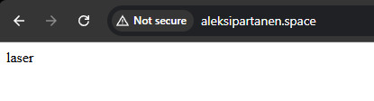b) Alidomain
Tehdään kaksi uutta alidomainia. Tehdään alidomainit yksi.aleksipartanen.space ja kaksi.aleksipartanen.space. Aloitetaan lisäämällä alidomainit Namecheapiin. Aloitan menemällä namecheapin dashboardille. Namecheapillä on hyvät omat ohjeet alidomainin tekemiseen, joita seuraan (Namecheap 24.10.2024). Sieltä painan Manage nappia aleksipartanen.space domainin kohdalta. Aukeaa domainin hallintasivu, josta valitsen Advanced DNS valikon. Lisään kaksi uutta A tietuetta, jonka Host arvoiksi annan yksi ja kaksi Value kohtaan laitan jokaisen osoittamaan virtuaalikoneeni IPv4 osoitteeseen. Odotan jonkin aikaa ja molemmat sivut näkyvät oikein internettiin.
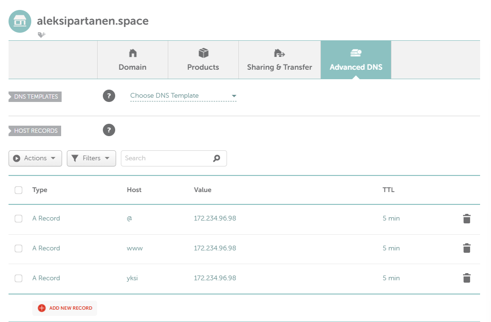 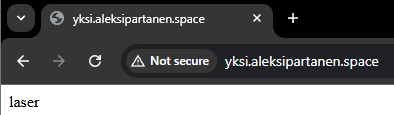 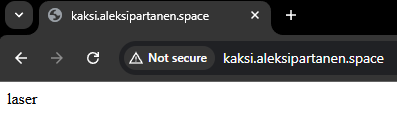c) Tutki DNS tietoja.
Ensimmäisenä lataan dnsutils(Johnson 7.2.2011) paketin komennolla sudo apt-get install dnsutils. Asentaminen onnistuu ilman ongelmia. Seuraavaksi käytän dnsutils paketin mukana tullutta dig(Linux man page) komentoa, käytän komennossa -t lippua, joka kertoo dns tyypin, jota halutaan etsiä. Jos halutaan etsiä jokainen dns tieto, käytetään ANY arvoa -t lipun kanssa. Komento jota käytän on dig @8.8.8.8 google.com -t ANY.
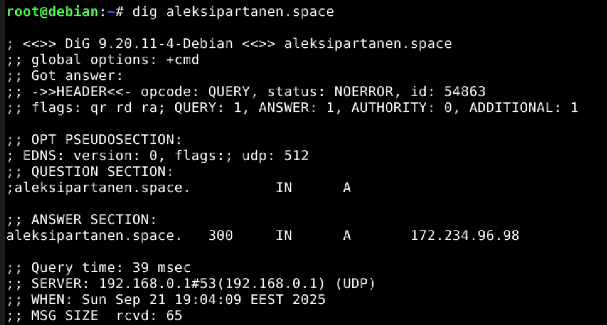Omasta domainistani ei löydy hirveästi tietoa dig komennolla. Käytin komentoa ilman IPv4 osoitetta, koska palvelimeni IPv4 osoitteella ei saatu siihen yhteyttä. Ainoa tietue, jonka näkee dig komennolla, on A tietue joka kertoo osoitteen, johon domain nimi osoittaa.
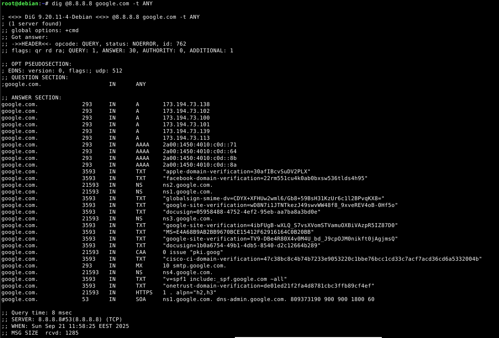Googlen domainista löytyy rutkasti enemmän tietoa. Tuloksesta käy ilmi, että google.com domainilla on AAAA, NS, HTTPS, MX, SOA, A, NS, TXT ja CAA tietueet päällä.
AAAA tietue pitää sisällään IPv6 osoitteen domainille (Cloudflare, DNS records). Google.com osoitteelle tämä arvoja on 4.
A tietue pitää sisällään IPv4 osoitteen domainille (Cloudflare, DNS records). Google.com osoitteella näitä on 6 kappaletta.
TXT tietue pitää sisällään teksti arvoja (Cloudflare, DNS records). Yleensä näitä käytetään sähköpostien turvallisuuteen liittyen, ja googlella näyttääkin olevan mm. applen, facebookin ja docusign palveluiden julkisia vahvistus avaimia.
NS tietue pitää sisällään nimipalvelimen, joka pitää sisällään nimipalvelin arvot (Cloudflare, DNS records). Esimerkki tapauksessa niitä on useita, mm. ns2.google.com.
CAA tietue pitää sisällään tiedon, että mitkä sertifikaatti viranomaiset voivat antaa sertifikaatteja kyseiselle domainille (Cloudflare, DNS records). Esimerkissä arvo on kyseinen viranomainen on pki.goog.
SOA tyyppi kertoo monta asiaa. Ensimmäinen osoite vastauksessa on MNAME, joka kertoo ensisijaisen nimipalvelimen (Cloudflare, What is a DNS SOA record?), joka on tässä tapauksessa ns1.google.com. Toinen osoite on ylläpitäjän sähköposti osoite vaikkei se ole sähköposti osoitteen normaalissa muodossa. dns-admin.google.com tarkoittaa, että ylläpitäjän sähköposti osoite on dns1-admin@google.com (Cloudflare, What is a DNS SOA record?). Seuraava arvo on SERIAL, alueellinen sarjanumero. Kun tämä arvo muuttuu, toissijaiset nimipalvelimet tietävät päivittää heidän tietonsa (Cloudflare, What is a DNS SOA record?). Seuraava luku on REFRESH, tässä tapauksessa 900 sekunttia, joka tarkoittaa aikaa sekunneissa, jolloin toissijaiset palvelimet pyytävät ensisijaiselta palvelimelta uuttaa SOA tietuetta (Cloudflare, What is a DNS SOA record?). Seuraava arvo on RETRY, joka kertoo montako sekunttia palvelimen pitäisi odottaa ennen kuin se pyytää arvoja uudestaan ensisijaiselta nimipalvelimelta vastaamattoman pyynnön jälkeen (Cloudflare, What is a DNS SOA record?), tässä tapauksessa 900 sekunttia. Toiseksi viimeisenä on EXPIRE, joka kertoo milloin toissijainen palvelin lopettaa vastaamasta alueen pyyntöihin, jos se ei saa vastausta ensisijaiselta palvelimelta (Cloudflare, What is a DNS SOA record?). Google.com toissijainen nimipalvelin lopettaa vastaamasta alueen pyyntöihin 1800 sekunnin jälkeen, eli 30 minuutin jälkeen. Viimeisenä arvona on TTL, Time To Live, joka kertoo kuinka kauaksi aikaa jokaista tietuetta pidetään välimuistissa, cachessa (Cloudflare, What is a DNS SOA record?). Google.com tämä arvo on 60 sekunttia.
Host komento
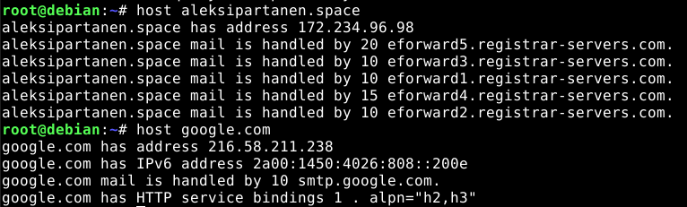Host komento näyttää domainin IPv4, IPv6 sekä sähköposti osoitteen. Omalla domainillani on useampi sähköposti osoite, jotka todennäköisesti tehdään Namecheapin puolesta automaattisesti jokaiselle domain nimelle. Googlella sen sijaan on vain yksi. Omalla domainillani ei ole IPv6 osoitetta asetettuna.
Tehtävänanto
h5 Nimekäs (Karvinen 2025)Lähteet
- Cloudflare. What is a DNS SOA record?. Luettavissa: https://www.cloudflare.com/learning/dns/dns-records/dns-soa-record/. Luettu: 21.9.2025
- CLoudflare. DNS records. Luettavissa: https://www.cloudflare.com/learning/dns/dns-records/. Luettu: 21.9.2025
- Cloudflare Docs. Time to Live (TTL). Luettavissa: https://developers.cloudflare.com/dns/manage-dns-records/reference/ttl/. Luettu: 21.9.2025
- Johnson E., 7.2.2011. How do I install dig? Reddit postaus @erik-johnson. Luettavissa: https://askubuntu.com/questions/25098/how-do-i-install-dig. Luettu: 21.9.2025
- Karvinen, T. 2025. Linux Palvelimet. Tero Karvinen. Luettavissa: https://terokarvinen.com/linux-palvelimet/#h5-nimekas. Luettu: 18.9.2025.
- Linux man page. Dig. Luettavissa: https://linux.die.net/man/1/dig. Luettu: 21.9.2025
- Namecheap, 24.10.2024. How to Create a Subdomain for my Domain. Namecheap. Luettavissa: https://www.namecheap.com/support/knowledgebase/article.aspx/9776/2237/how-to-create-a-subdomain-for-my-domain/. Luettu: 18.9.2025